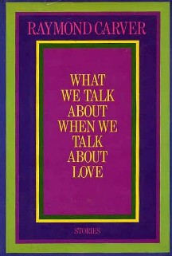

/*
*
*
*
*
*
*
*
*
*/
{
}
/*
*
*
*
*
*
*
*
*
*/
{
}
Hunter Blanks, hblanks@monetate.com / @tildehblanks
Science has two faces. One that knows, the other that does not know yet.
When I talk about Python, I am always asking:
>>> import requests
>>> r = requests.get('https://google.com/')
>>> (r.status_code, r.content[:40])
(200, '<!doctype html><html itemscope itemtype=')
But inside requests, or underneath it, we must deal
with a different box, urllib2:
>>> import urllib2
>>> u = urllib2.urlopen('https://google.com/')
>>> u
<addinfourl at 4391764336 whose fp = <socket._fileobject object at 0x105c43c50>>
Additionally, and unexpectedly, this book addresses the reader as a friend.
‘Books,’ remarked the poet Jean-Paul once, ‘are long letters to friends.’ One could not define with greater elegance the character and function of humanism: it is, in its quintessence, a telecommunication, a way of creating friendships at a distance through writing.
@P=split//,".URRUU\c8R";@d=split//,"\nrekcah xinU / lreP rehtona tsuJ";sub p{
@p{"r$p","u$p"}=(P,P);pipe"r$p","u$p";++$p;($q*=2)+=$f=!fork;map{$P=$P[$f^ord
($p{$_})&6];$p{$_}=/ ^$P/ix?$P:close$_}keys%p}p;p;p;p;p;map{$p{$_}=~/^[P.]/&&
close$_}%p;wait until$?;map{/^r/&&<$_>}%p;$_=$d[$q];sleep rand(2)if/\S/;print
I think [the contest judge] made a bad judgement, because the winning program was not nearly as confusing as mine . . . . My program is difficult to understand even if you fix it up with good formatting and reasonable variable names.
# --------------------------------------------------------- common routines
def pathdirs():
"""Convert sys.path into a list of absolute, existing, unique paths."""
as well as providing tools for reading it:
$ pydoc -p 8000
$ sphinx-quickstart $ make html
<title>Introduction</title>
<para>
Welcome, gentle reader, to Rusty's Remarkably Unreliable Guide to
Linux Kernel Hacking. This document describes the common routines
and general requirements for kernel code: its goal is to serve as a
primer for Linux kernel development for experienced C programmers.
I avoid implementation details: that's what the code is for, and I
ignore whole tracts of useful routines.
</para>
<para>
Before you read this, please understand that I never wanted to
write this document, being grossly under-qualified, but I always
wanted to read it, and this was the only way. I hope it will
grow into a compendium of best practice, common starting points
and random information.
</para>
|  |
It seems to me we're just beginners
Hunter Blanks, hblanks@artifex.org
@tildehblanks | github.com/hblanks/talks